本文最后更新于：2020年6月30日 下午
2.1 信息存储
2.1.2 字数据大小
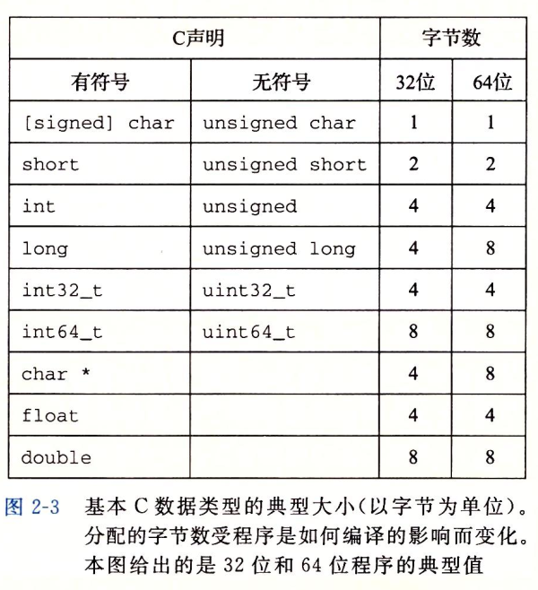
2.1.3 寻址和字节顺序
在计算机内存中，通常是以字节（Byte），也就是 8 个位（Bit）为基本存储单元（也有以 16 位为基本存储单元的）。对于跨越多个字节的数据类型（比如 int 长 4 个字节），如何在内存中对这些字节进行排序有两种常见的方法：大端法（Big-endian）和小端法（Little-endian）。
【注】不管是大端法还是小端法存储，计算机在内存中存放数据的顺序都是从低地址到高地址，所不同的是首先取低字节的数据存放在低地址还是取高字节数据存放在低地址。
- 若首先取高字节的数据存放在低地址，则是大端法
- 若首先取低字节的数据存放在低地址，则是小端法
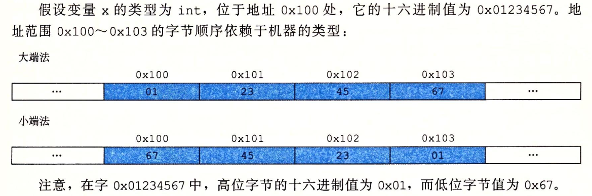
大多数Intel兼容机是小端法
2.1.9 C语言中的移位运算
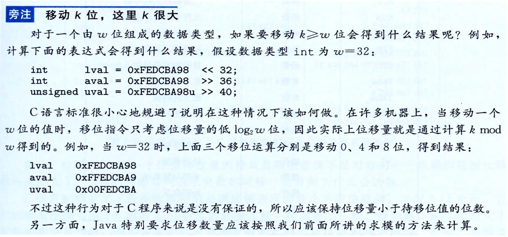
遇到一行多个移位运算的时候要记得打括号
2.2 整数表示
2.2.3 补码编码
为了表示负数,最常见的计算机表示方式就是补码,将最高位表示为负权:
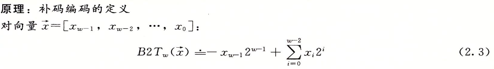
最高位表示的权重为$-2^{w-1}$.
补码和计算机表示的二进制码的转换是一一对应的(双射)
为什么不用原码和反码表示负数:
- 原码:最高位表示符号,剩下位表示数字
- 反码:和补码类似,不过最高位表示的权重为$-(2^{w-1}-1)$
这两个编码有一个不好的性质,对数字0有两个不同的编码:
- 原码中[00..0]表示+0,[10..0]表示-0
- 反码中[00..0]表示+0,[11..1]表示-0
即表示的编码不是一一对应的双射关系
2.2.4 C语言中有符号数和无符号数之间的转换
强制转换对于有一点编程经验的人来说,看似习以为常,但是在设计强制转换的时候可以选择很多规则,C语言转换规则是:从位级来看,而不是从数值来看.即对应的二进制不变.
2.2.6 扩展一个数字的位表示
较大的数据类型转换位较小的可能会出错,但是从较小的数字转换为较大的应该是可以实现的.
将一个无符号数转换为更大的数据类型,只需在开头加0即可,称为零扩展:
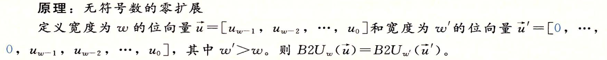
将一个补码数字转换为更大的数据类型,可以在在前面填充最高有效位的值,称为符号扩展:
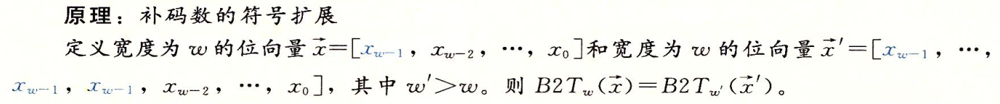
其中$x_{w-1}$为符号位
2.3 整数运算
2.3.1 无符号加法
考虑两个非负数x,y,满足$0 \le x,y\le 2^w-1$,每个数都能表示为w位无符号数,则有$0 \le x+y\le 2^{w+1}-2$,表示这个和可能需要w+1位表示.
一般常见的编程语言仅仅支持固定精度的计算,因此会产生溢出:
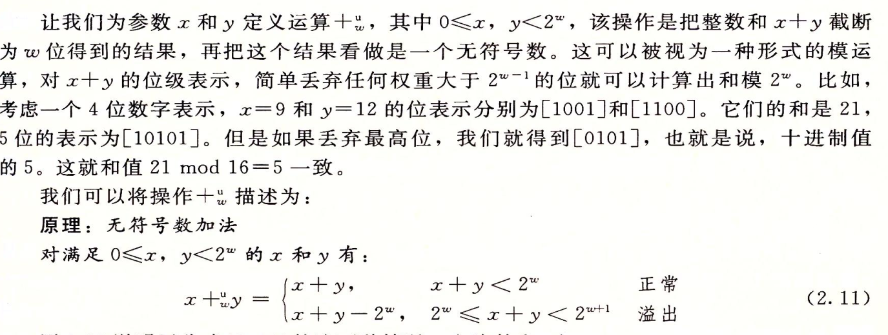
上述的也可以称为模数加法,形成了一个数学结构,阿贝尔群,满足如下性质:
- 可交换
- 仅有一个单位元(这里单位元是0)
- 每个元素有一个加法逆元
所以对于无符号数$x$都有唯一一个逆元$-_w^u x$:
2.3.2 补码加法
补码加法和无符号加法,对于计算机来说处理是一样的,即截断,然后计算机会将截断后的数字当做补码进行解读.
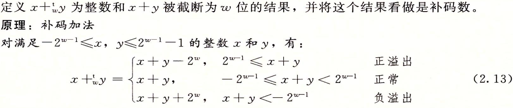
2.3.3 补码的非
范围在$TMin_w \le x\le TMax_w$中的每个数字x都有$+^t_w$下的加法逆元$-^t_w$,称为补码的非:
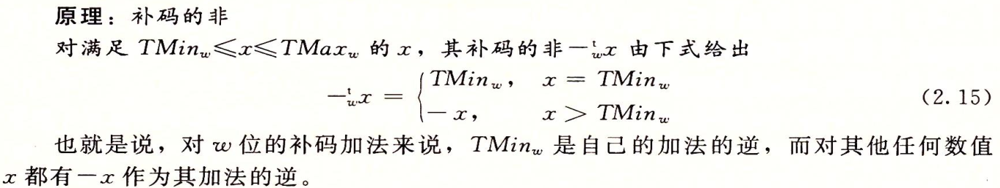
2.3.4 无符号乘法
范围在$0\le x,y\le2^w-1$内的整数x,y可以被表示为w位的无符号数,对应的乘积$x \cdot y$的取值范围为$[0,2^{2w}-2^{w+1}+1]$需要2w位表示,但是C语言是用w位表示的,所以有截断:
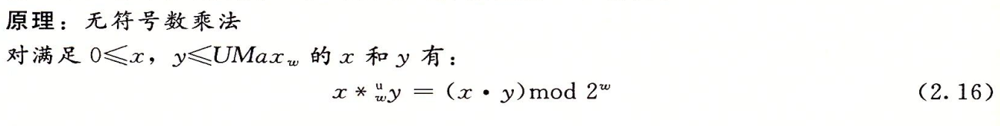
2.3.5 补码乘法
范围在$-2^{w-1}\le x,y\le 2^{w-1}-1$内的整数x,y可以被表示位w位的补码,但是成乘积范围在$-2^{w-1}\cdot (2^{w-1}-1)=-2^{2w-2}+2^{w-1}$到$-2^{w-1}\cdot -2^{w-1}=2^{2w-2}$之间,这个范围需要2w位表示,C语言将其截断为w位,将其记为$x*_w^t y$.
上述机器计算的结果,可以用算法表示为:先将乘积得到的值模$2^w$,得到的无符号数转换为补码:
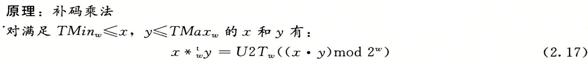
根据书上的证明有如下结论:相同位表示的无符号数乘法和补码乘法得到的二进制数结果是一样的:
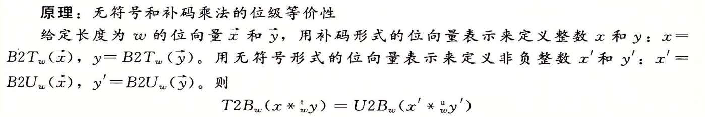
2.3.6 乘以常数
大多数机器上整数乘法指令相当慢,大多需要10+个时钟周期,编译器因此进行了一定的优化:试着用位移和加法运算的组合来代替乘以常数因子的乘法.
下面首先说说乘以2的幂的情况:
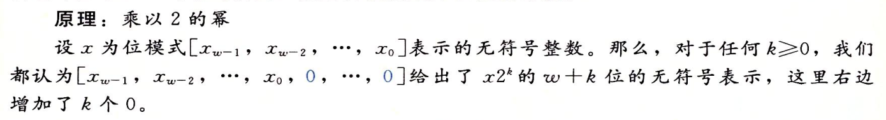
因此,左移一个数值等价于一个与2的幂相乘的无符号乘法:
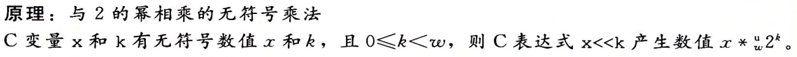
无论是无符号还是补码运算,乘以2的幂都会导致溢出,但是即使溢出,通过移位的结果都是一样的
为了减少代价,许多C语言编译器试图以位移,加法减法消除很多整数乘以常数的情况,例如x*14可以重写为:(x<<3)+(x<<2)+(x<<1),更好地有:(x<<4)-(x<<1)
选择上述的方法还是使用乘法指令,取决于指令的相对速度,而这个与机器高度相关,一般只在仅需要少量位移,加法减法就足够的时候使用这种优化
2.3.7 除以2的幂
一般地,整数除法比整数乘法更慢—需要30+个周期,但是除以2的运算可以通过右移计算.无符号和补码数分别通过逻辑右移和算数右移实现.
无符号右移非常简单,因为一定是逻辑右移:
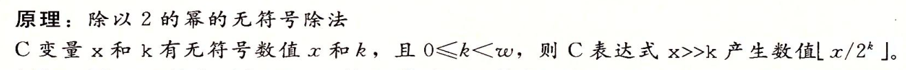
除以2的幂的补码运算,情况稍有复杂,首先为了保证为负,需要算术右移:
注意:上图中向上舍入原理,经过与英文版比较,最后应为”产生数值$\lceil x/2^k\rceil$”,定义偏量为$(1<<k)-1$,下面有几个例子:
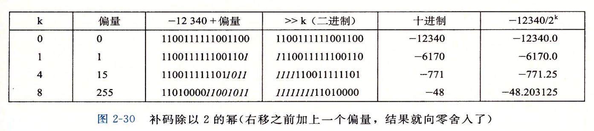
根据下图的几个数据与相关的证明可以知道:
- 对于不需要舍入的情况,加上偏量只会影响最后被移掉的位
- 对于需要舍入的情况,加上偏量会导致较高的位加1,这个会导致向0舍入
偏置技术用的数学知识:$\lceil x/y\rceil=\lfloor (x+y-1)/y\rfloor$(x,y为整数)
所以上面的式子:(x+(1<
综合1,2两个情况,得到C的算术右移的补码机器,计算$x/2^k$:
(x<0 ? x+(1<<k)-1 : x)>>k可惜的是,不能将除以2的幂推广到一般除法.
2.4 浮点数
与十进制类似,形如$bmb{m-1}…b1b_0.b{-1}b{-2}…b{-n-1}b_{-n}$的二进制数,其对应的十进制的值为:
有限长度的编码不能表示如$\frac{1}{3},\frac{5}{7}$的数字,小数的二进制表示法仅能表示能被写成$x\times2^y$的数.
2.4.2 IEEE浮点表示
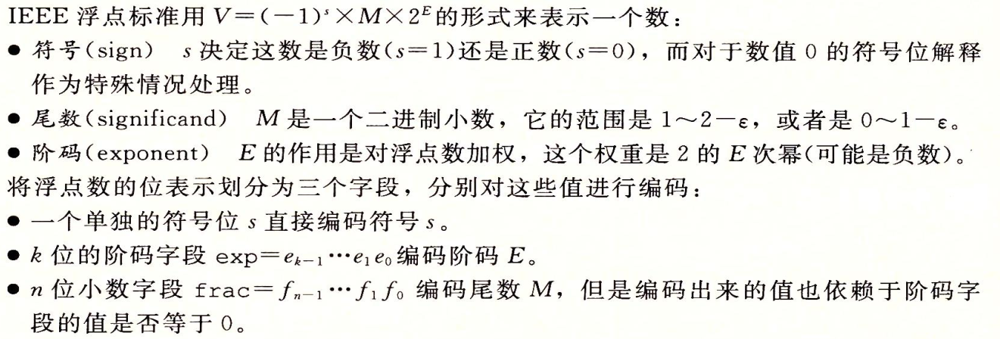
下图是常见的单双精度的浮点数的格式:
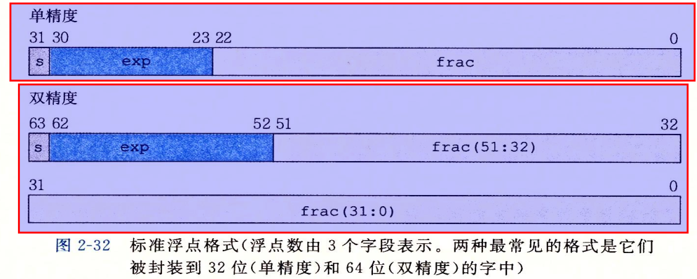
上图说明了:
| 精度 | s位数 | exp位数 | frac位数 |
|---|---|---|---|
| 单 | 1 | 8 | 23 |
| 双 | 1 | 11 | 52 |
给定位表示,根据exp的值,被编码的值可以分成三种不同的情况(最后一种有两个不同的变种),下图为单精度的数字表示:
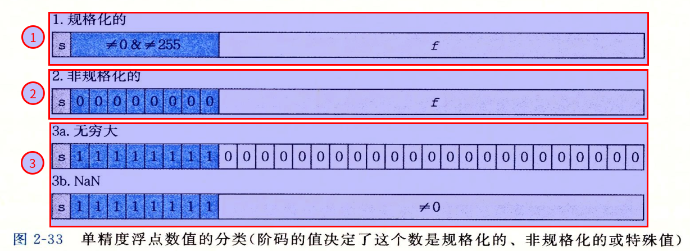
由上图有以下几个解码:
规格化的数值
此时,阶码的值E=e-Bias,e是exp字段对应的无符号数,Bias为$2^{k-1}-1$,其中k为exp的位数,因此产生的指数E的范围对于单精度为-126~+127,对于双精度为-1022~+1023
frac是小数值$f$,$0\le f < 1$,二进制表示为$0.f_{n-1}…f_1f_0$,为数M定义为$M=1+f$,因为对于二进制来说,按照十进制的科学计数法的规则,二进制科学计数法第一位一定为1,为了节省比特位,直接将其隐藏,这种方法也叫隐含的以1开头的表示.
非规格化的值
当阶码域exp全部是0的时候,所表示的数字是非规格化的形式,此时阶码$E=1-Bias$,尾数的值是$M=f$,也就是小数字段的值,不包含隐含的1
为什么要对于非规格化的值设置这样的偏置值:
这样可以让从非规格化到规格化的转换平滑
非规格化的用途:
提供一种表示0的方法,如果使用规格化数,必须$M\ge 1$,所以不能表示0,$+0.0$的浮点表示位模式为所有位为0,此时$M=f=0$,当符号位为1,其他所有位为0的的时候,表示$-0.0$.
IEEE的浮点格式表示,$+0.0$和$-0.0$在某些方面是不同的
表示那些非常接近0.0的数,非规格化提供一种属性:逐渐溢出(gradual underflow),表示一个数与0的距离非常小
特殊值
- 3a: 当阶码域exp全是1,小数域全是0,得到的值表示无穷,s决定是正无穷还是负无穷,当把两个非常大的数字相乘或者进行了除以0的操作后,无穷能表示溢出
- 3b: 当小数域非0的时候,结果值为NaN(Not a Number),这用于表示不是实数或者无穷:$\sqrt{-1}或\infty - \infty $等
2.4.3 数字示例
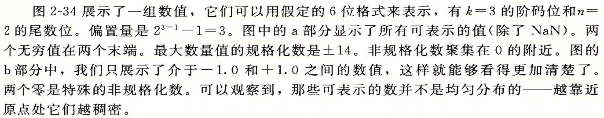
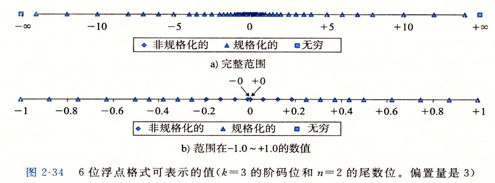
2.4.4 舍入
默认的方式为:向偶数舍入,也被称为向最近的值舍入(round-to-nearest),又叫向偶数舍入(round-to-even).方法为”四舍六入五成双”,使得到的最低有效位为偶数
其他的几种有:向零舍入,向下舍入,向上舍入
向偶舍入的原因:为了将50%的几率向上舍入和50%几率向下舍入
向偶舍入也可以应用到二进制:将最低有效位的值为0认为是偶数,1为奇数
2.4.5 浮点运算
IEEE标准制定了简单的规则确定加法乘法这样的算术运算结果:
由于精度的限制,对于两个浮点数x,y,某个运算$x\bigodot y$产生的值,计算机会再进行舍入:$Round(x\bigodot y)$
当其中有一个为特殊值的时候(如-0,无穷,NaN),IEEE定义了一些更合理的规则:1/-0产生$-\infty$,1/+0产生$+\infty$.
整数加法形成了阿贝尔群,IEEE标准实数加法也构成了阿贝尔群,但是证明过程需要加上Round()函数的证明:
将$x+^fy$定义为$Round(x+y)$,如果不考虑溢出则直接可以得到就是阿贝尔群,但是如果考虑溢出:
交换律
交换律:交换x,y是都会同样的方式溢出,所以$+^f$是可交换的;
不可结合:例如,使用单精度浮点(3.14+1e10)-1e10=0.0因为3.14作为尾数被舍入,减去1e10变为0,而3.14+(1e10-1e10)=3.14）
逆元
对于x,不考虑溢出明显有逆元-x,如果考虑溢出:$x+^f(-x)$一般都为0,但是有例外$+\infty+^f(-\infty)=NaN$,$NaN+^fx=NaN$
可见这个逆元不能普适,所以也不存在单位元,所以$+^{f}$不是阿贝尔群
另外浮点加法的性质还包含单调性
浮点乘法具有:
交换律
不可结合
对加法不具有分配律
单调性:
平方大于等于0:
若$a\ne 0:a*a\ge0$
缺乏结合性和分配性对科学计算程序员和编译器的编写造成麻烦
本博客所有文章除特别声明外，均采用 CC BY-SA 4.0 协议 ，转载请注明出处！